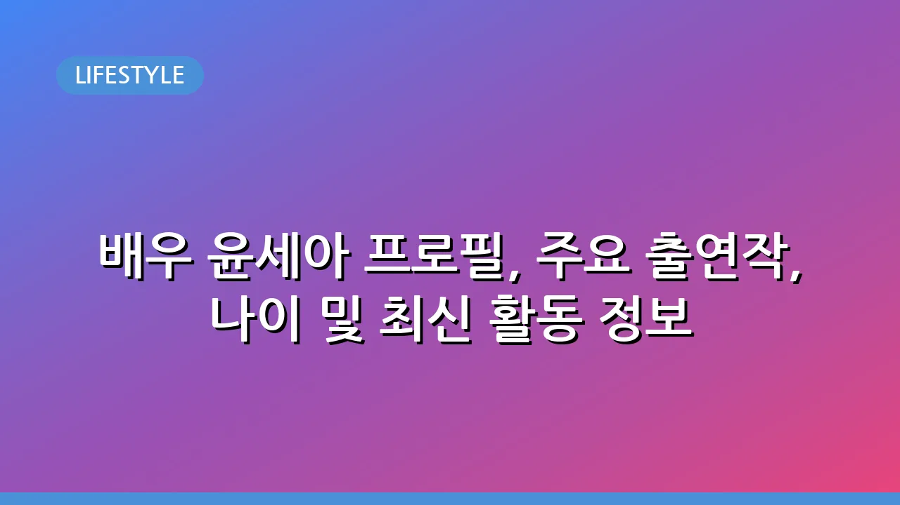

배우 윤세아 프로필, 주요 출연작, 나이 및 최신 활동 정보
배우 윤세아, 대체 불가능한 존재감의 비결은?
배우 윤세아는 데뷔 이후 꾸준히 다양한 작품에서 깊이 있는 연기를 선보이며 시청자들에게 강렬한 인상을 남기고 있습니다. 나이를 가늠하기 어려운 동안 외모와 함께 매 작품마다 캐릭터에 완벽하게 녹아드는 연기력으로 '믿고 보는 배우'라는 수식어를 얻었는데요. 이 글에서는 윤세아 배우의 기본적인 프로필 정보부터 주요 출연작, 그리고 그녀의 다채로운 매력까지 자세히 살펴보겠습니다.
윤세아 프로필: 나이, 데뷔 및 기본적인 정보
윤세아 배우는 2005년 영화 <혈의 누>를 통해 데뷔한 이래, 드라마와 영화를 넘나들며 활발한 활동을 이어오고 있습니다. 그녀의 정확한 나이는 1978년생으로 알려져 있으며, 꾸준한 자기 관리로 나이를 무색하게 하는 미모를 유지하고 있습니다. 단아하고 세련된 이미지부터 강렬한 카리스마를 발산하는 역할까지 폭넓은 스펙트럼을 소화하며 대중의 사랑을 받고 있습니다.
대표 드라마 및 영화 출연작 살펴보기
윤세아는 수많은 작품에서 주조연으로 활약하며 연기력을 인정받았습니다. 특히 그녀의 대표작들은 탄탄한 스토리와 함께 뛰어난 캐릭터 소화력이 돋보입니다. 다음은 그녀의 주요 출연작 일부입니다.
- 드라마:
- 시크릿 가든 (2010): 채린 역
- 신사의 품격 (2012): 홍세라 역
- 내 사랑 나비부인 (2012): 윤설아 역
- SKY 캐슬 (2018): 노승혜 역
- 날 녹여주오 (2019): 나하영 역
- 비밀의 숲 2 (2020): 이연재 역
- 영화:
- 혈의 누 (2005): 강소연 역 (데뷔작)
- 궁녀 (2007): 희빈 역
- 평행이론 (2010): 윤세아 역
- 해빙 (2017): 현정 역
특히 SKY 캐슬에서 보여준 '노승혜' 역은 그녀의 연기 인생에 한 획을 그은 작품으로 평가받으며, 대중에게 강렬한 인상을 남겼습니다.
다채로운 매력: 예능과 광고 활동
윤세아는 드라마와 영화뿐만 아니라 예능 프로그램을 통해서도 친근하고 솔직한 매력을 발산했습니다. 삼시세끼 산촌편 등에서 보여준 자연스러운 모습은 그녀의 또 다른 면모를 보여주며 대중적 호감도를 높였습니다. 또한, 그녀의 세련되고 건강한 이미지는 다양한 브랜드의 광고 모델로도 활약하게 했습니다. 그녀의 인스타그램 등 SNS를 통해서도 일상 속 스타일리시한 모습과 팬들과 소통하는 모습을 엿볼 수 있습니다.
윤세아의 연기 스타일과 대중적 평가
윤세아는 안정적인 발성과 섬세한 감정 표현으로 어떤 역할이든 자신만의 색깔로 소화해냅니다. 그녀는 특히 복합적인 내면을 가진 캐릭터를 탁월하게 그려내며 시청자들의 공감을 이끌어내는 데 능합니다. 대중은 그녀의 연기에 대해 '깊이 있고 몰입감 높다', '캐릭터 소화력이 뛰어나다' 등의 긍정적인 평가를 내리고 있으며, 매 작품마다 새로운 변신을 기대하게 만드는 배우로 자리매김했습니다.
최근 활동과 앞으로의 기대
윤세아 배우는 현재도 끊임없이 새로운 작품을 통해 시청자들을 만나고 있습니다. 최근에는 드라마 비밀의 숲 2에서 전작에 이어 '이연재' 역으로 강렬한 존재감을 다시 한번 입증했으며, 이후에도 여러 작품 출연을 검토하며 활발한 활동을 예고하고 있습니다. 그녀의 앞으로의 행보 역시 귀추가 주목되며, 어떤 새로운 캐릭터로 우리에게 놀라움을 선사할지 기대됩니다. 윤세아 배우의 출연작들을 다시 보고 싶으시다면, 다양한 OTT 스트리밍 서비스에서 확인하실 수 있습니다.
🔗 이 글도 함께 보면 좋아요: 초보부터 전문가까지, 성공적인 캠핑을 위한 필수 용품 추천과 선택 가이드
관련 추천 상품
이 포스팅은 쿠팡 파트너스 활동의 일환으로, 이에 따른 일정액의 수수료를 제공받습니다.